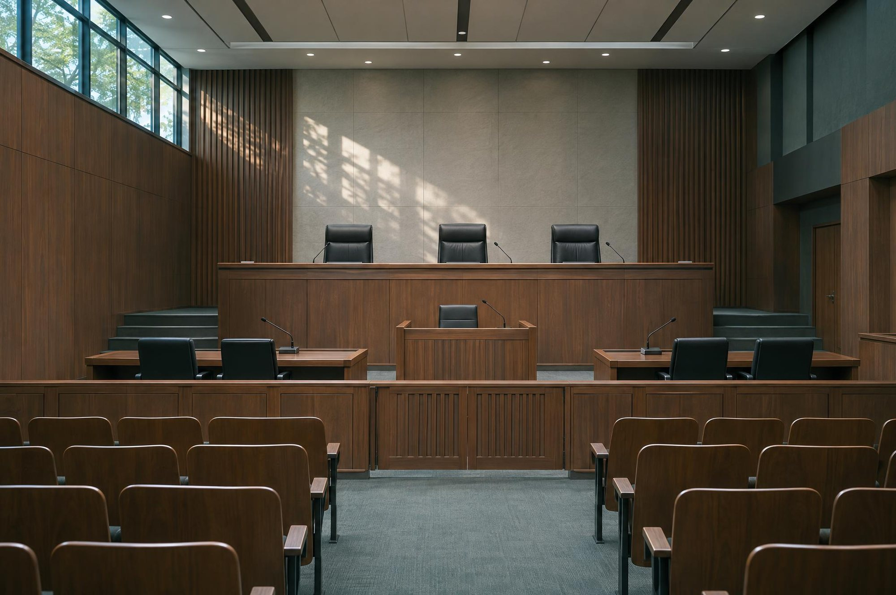

MAIN BUSINESS
업무분야
수천 건의 사건을 수행하며 쌓은 전문성을 바탕으로, 최상의 법률서비스를 제공합니다.
01 · CRIMINAL 03 · FAMILY · INHERITANCE
03 · FAMILY · INHERITANCE 06 · DUI · CYBER · SCHOOL
06 · DUI · CYBER · SCHOOL 09 · FAIR TRADE
09 · FAIR TRADE
형사
수사단계부터 재판까지 체계적인 형사변호를 제공합니다.
MORE VIEW →02 · CIVIL · ADMINISTRATIVE민사·행정
계약분쟁, 손해배상, 행정소송 등 민사·행정 사건 전문입니다.
MORE VIEW →03 · FAMILY · INHERITANCE이혼·상속·가사
가사분쟁의 원만한 해결과 상속 문제를 조력합니다.
MORE VIEW →04 · CONSTRUCTION · REAL ESTATE건설·부동산·재개발·재건축
건설분쟁, 부동산 거래 및 개발 관련 법률서비스를 제공합니다.
MORE VIEW →05 · CORPORATE기업법무
경영권 분쟁, 주주 간 분쟁 등 회사 관련 소송을 전문으로 합니다.
MORE VIEW →06 · DUI · CYBER · SCHOOL음주운전·사이버모욕·학교폭력
음주운전, 사이버모욕, 학교폭력 등 사건에 대한 전문 법률서비스를 제공합니다.
MORE VIEW →07 · IMMIGRATION이민·출입국 관리
이민, 비자, 출입국 관련 법률서비스를 제공합니다.
MORE VIEW →08 · LABOR인사노무
중대재해처벌법 대응, 산업안전 자문 및 노동법, 인사관리 자문을 제공합니다.
MORE VIEW →09 · FAIR TRADE공정거래
공정거래법 자문, 공정위 조사 대응을 전문으로 합니다.
MORE VIEW →
10 · TAX조세
세무조사 대응, 조세소송 및 절세 자문을 제공합니다.
MORE VIEW →